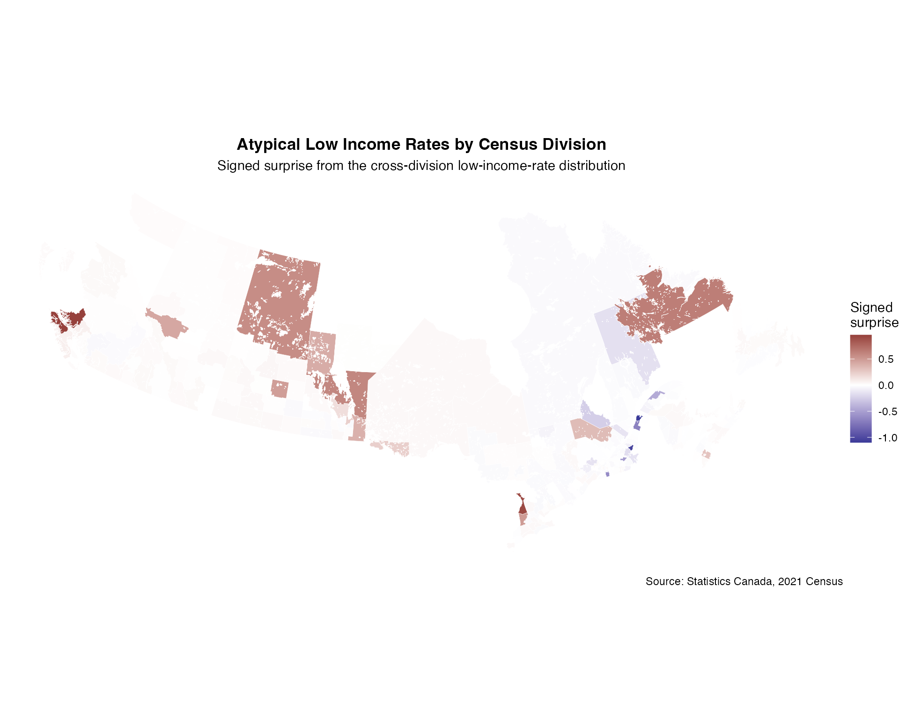
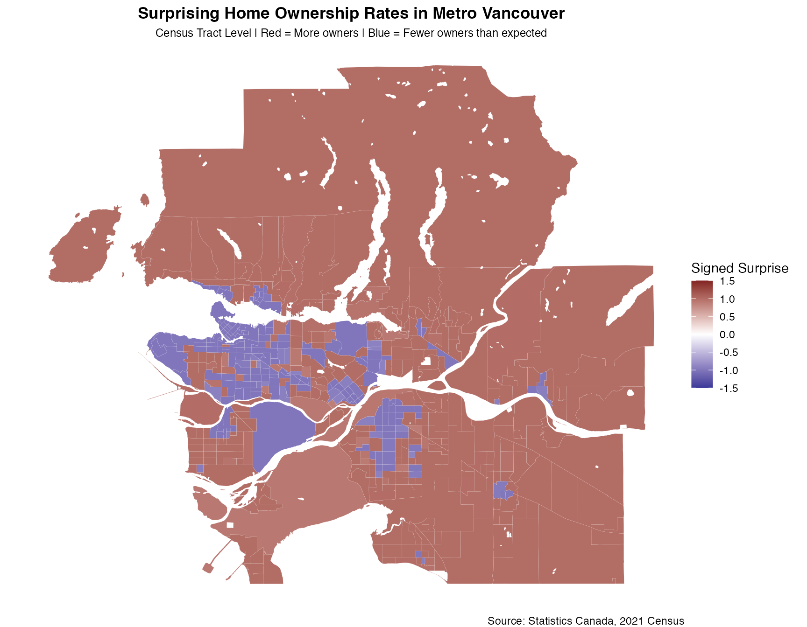
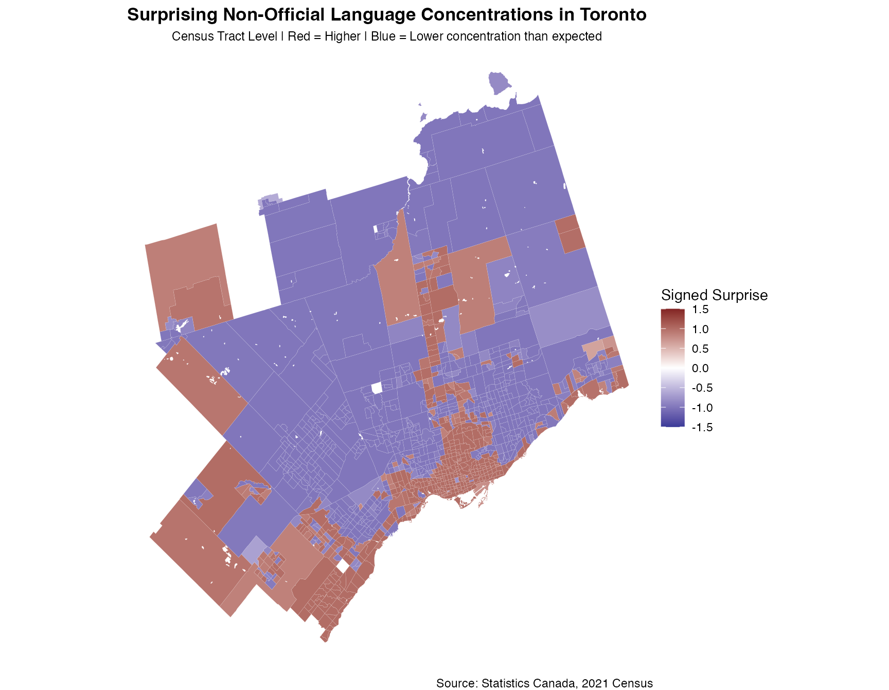
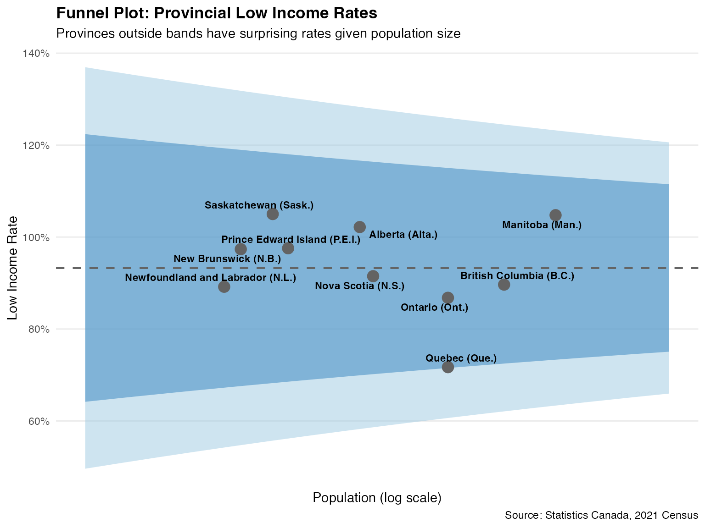

Bayesian Surprise with Canadian Census Data (cancensus)
Source:vignettes/cancensus-workflow.Rmd
cancensus-workflow.RmdIntroduction
This vignette demonstrates how to use the
bayesiansurpriser package with Canadian Census data
accessed through the cancensus package. The cancensus
package provides access to Canadian Census data from 1996 through 2021
via the CensusMapper API.
Canadian Census data is a useful setting for Bayesian Surprise analysis because it provides:
- Comprehensive population data at multiple geographic levels
- Rich demographic and socioeconomic variables
- Consistent geography across Census years
- Both counts and rates for many variables
Prerequisites
You’ll need a CensusMapper API key from https://censusmapper.ca/users/sign_up
library(bayesiansurpriser)
library(cancensus)
library(sf)
library(ggplot2)
library(dplyr)
# Set your CensusMapper API key (do this once)
# set_cancensus_api_key("YOUR_KEY_HERE", install = TRUE)
# Optionally set a cache path for faster subsequent queries
# set_cancensus_cache_path("path/to/cache", install = TRUE)Understanding cancensus Data Structure
Before diving into analysis, let’s understand the available datasets and variables.
# List available Census datasets
datasets <- list_census_datasets()
print(datasets %>% select(dataset, description))
# List regions for the 2021 Census
regions_2021 <- list_census_regions("CA21")
head(regions_2021 %>% filter(level == "CMA"))Example 1: Low Income Rates by Census Division
Let’s examine low income rates across Canada’s Census Divisions and identify which regions have high or low surprise under an explicit population and sampling-variation model space.
Fetch Census Data
# Find relevant vectors for low income
# v_CA21_1085: Total - Low-income status in 2020
# v_CA21_1086: 0 to 17 years in low income
# v_CA21_1090: In low income
# Get low income data at the Census Division level for all of Canada
# Using labels = "short" for cleaner column names
income_data <- get_census(
dataset = "CA21",
regions = list(C = "01"), # All of Canada
vectors = c(
total_pop = "v_CA21_1085", # Total population for low income status
low_income = "v_CA21_1090" # Population in low income
),
level = "CD",
geo_format = "sf",
labels = "short",
quiet = TRUE
)
# Clean and filter
income_data <- income_data %>%
filter(!is.na(total_pop) & !is.na(low_income)) %>%
filter(total_pop > 0) %>%
mutate(
low_income_rate = low_income / total_pop
)
head(income_data %>% st_drop_geometry() %>% select(GeoUID, `Region Name`, total_pop, low_income, low_income_rate))
#> GeoUID Region Name total_pop low_income low_income_rate
#> 1 1001 Division No. 1 (CDR) 4.3 3.9 0.9069767
#> 2 1002 Division No. 2 (CDR) 2.6 2.4 0.9230769
#> 3 1003 Division No. 3 (CDR) 2.3 1.6 0.6956522
#> 4 1004 Division No. 4 (CDR) 5.2 2.8 0.5384615
#> 5 1005 Division No. 5 (CDR) 3.4 3.0 0.8823529
#> 6 1006 Division No. 6 (CDR) 3.7 3.5 0.9459459Compute Bayesian Surprise
# Compute surprise
income_surprise <- surprise(
income_data,
observed = low_income,
expected = total_pop,
models = c("uniform", "baserate", "funnel")
)
print(income_surprise)
#> Bayesian Surprise Map
#> =====================
#> Models: 3
#> Surprise range: 0.1142 to 0.4116
#> Signed surprise range: -0.3171 to 0.4116
#>
#> Simple feature collection with 276 features and 18 fields
#> Attribute-geometry relationships: constant (15), NA's (3)
#> Geometry type: MULTIPOLYGON
#> Dimension: XY
#> Bounding box: xmin: -133.1543 ymin: 41.7251 xmax: -52.61938 ymax: 62.58185
#> Geodetic CRS: WGS 84
#> First 10 features:
#> Shape Area Type Households Population 2016 GeoUID PR_UID Population
#> 1 9104.580 CD 117178 270348 1001 10 271878
#> 2 5915.569 CD 8891 20372 1002 10 19392
#> 3 19272.107 CD 6342 15560 1003 10 13920
#> 4 7019.972 CD 9196 20387 1004 10 19253
#> 5 10293.762 CD 17967 42014 1005 10 40396
#> 6 16043.377 CD 16489 38345 1006 10 37339
#> 7 9598.370 CD 14867 34092 1007 10 33044
#> 8 9234.941 CD 15385 35794 1008 10 33940
#> 9 13209.476 CD 6640 15607 1009 10 14733
#> 10 191691.086 CD 9518 24639 1010 10 24332
#> Households 2016 Dwellings Dwellings 2016 name
#> 1 112620 135137 131336 Division No. 1 (CDR)
#> 2 8737 11551 11497 Division No. 2 (CDR)
#> 3 6773 8046 8289 Division No. 3 (CDR)
#> 4 9345 10900 11338 Division No. 4 (CDR)
#> 5 17890 20875 20924 Division No. 5 (CDR)
#> 6 16434 19498 19296 Division No. 6 (CDR)
#> 7 14571 20304 20097 Division No. 7 (CDR)
#> 8 15587 21721 21913 Division No. 8 (CDR)
#> 9 6689 9366 9346 Division No. 9 (CDR)
#> 10 9193 10941 10758 Division No. 10 (CDR)
#> Region Name Area (sq km) total_pop low_income
#> 1 Division No. 1 (CDR) 9104.580 4.3 3.9
#> 2 Division No. 2 (CDR) 5915.569 2.6 2.4
#> 3 Division No. 3 (CDR) 19272.107 2.3 1.6
#> 4 Division No. 4 (CDR) 7019.972 5.2 2.8
#> 5 Division No. 5 (CDR) 10293.762 3.4 3.0
#> 6 Division No. 6 (CDR) 16043.377 3.7 3.5
#> 7 Division No. 7 (CDR) 9598.370 2.4 2.2
#> 8 Division No. 8 (CDR) 9234.941 2.6 1.6
#> 9 Division No. 9 (CDR) 13209.476 1.5 1.6
#> 10 Division No. 10 (CDR) 191691.086 2.0 2.8
#> geometry low_income_rate surprise signed_surprise
#> 1 MULTIPOLYGON (((-52.79548 4... 0.9069767 0.2417565 0.2417565
#> 2 MULTIPOLYGON (((-54.64846 4... 0.9230769 0.1780325 0.1780325
#> 3 MULTIPOLYGON (((-55.8764 47... 0.6956522 0.1748274 -0.1748274
#> 4 MULTIPOLYGON (((-59.2948 47... 0.5384615 0.2598667 -0.2598667
#> 5 MULTIPOLYGON (((-58.26214 4... 0.8823529 0.2136847 0.2136847
#> 6 MULTIPOLYGON (((-55.27854 4... 0.9459459 0.2574248 0.2574248
#> 7 MULTIPOLYGON (((-53.74344 4... 0.9166667 0.1759153 0.1759153
#> 8 MULTIPOLYGON (((-54.24936 4... 0.6153846 0.1757978 -0.1757978
#> 9 MULTIPOLYGON (((-55.42497 5... 1.0666667 0.2073977 0.2073977
#> 10 MULTIPOLYGON (((-60.91505 5... 1.4000000 0.2812346 0.2812346
summary(income_surprise)
#> Shape Area Type Households Population 2016
#> Min. : 206.5 CD:276 Min. : 780 Min. : 2558
#> 1st Qu.: 1852.4 1st Qu.: 9506 1st Qu.: 21874
#> Median : 3731.3 Median : 19418 Median : 42744
#> Mean : 18507.5 Mean : 54030 Mean : 126745
#> 3rd Qu.: 14803.9 3rd Qu.: 40004 3rd Qu.: 89067
#> Max. :707306.5 Max. :1160892 Max. :2731571
#>
#> GeoUID PR_UID Population Households 2016
#> Length:276 Length:276 Min. : 2323 Min. : 834
#> Class :character Class :character 1st Qu.: 22034 1st Qu.: 9368
#> Mode :character Mode :character Median : 45072 Median : 18056
#> Mean : 133404 Mean : 50753
#> 3rd Qu.: 94928 3rd Qu.: 38072
#> Max. :2794356 Max. :1112929
#>
#> Dwellings Dwellings 2016 name
#> Min. : 845 Min. : 945 Length:276
#> 1st Qu.: 11466 1st Qu.: 11332 Class :character
#> Median : 21558 Median : 20886 Mode :character
#> Mean : 58718 Mean : 55565
#> 3rd Qu.: 42987 3rd Qu.: 41316
#> Max. :1253238 Max. :1179057
#>
#> Region Name Area (sq km) total_pop low_income
#> Division No. 1 (CDR): 4 Min. : 206.5 Min. : 1.10 Min. :0.300
#> Division No. 2 (CDR): 4 1st Qu.: 1852.4 1st Qu.: 2.50 1st Qu.:1.800
#> Division No. 3 (CDR): 4 Median : 3731.3 Median : 3.10 Median :2.600
#> Division No. 4 (CDR): 4 Mean : 18507.5 Mean : 3.26 Mean :2.797
#> Division No. 5 (CDR): 4 3rd Qu.: 14803.9 3rd Qu.: 3.70 3rd Qu.:3.600
#> Division No. 6 (CDR): 4 Max. :707306.5 Max. :10.90 Max. :9.400
#> (Other) :252
#> geometry low_income_rate surprise signed_surprise
#> MULTIPOLYGON :276 Min. :0.1818 Min. :0.1142 Min. :-0.31707
#> epsg:4326 : 0 1st Qu.:0.6667 1st Qu.:0.1780 1st Qu.:-0.18383
#> +proj=long...: 0 Median :0.8443 Median :0.2151 Median :-0.12653
#> Mean :0.8367 Mean :0.2164 Mean : 0.01639
#> 3rd Qu.:1.0000 3rd Qu.:0.2496 3rd Qu.: 0.23897
#> Max. :1.4737 Max. :0.4116 Max. : 0.41161
#> Visualize Surprising Regions
# Add surprise values to data
income_data$surprise <- get_surprise(income_surprise, "surprise")
income_data$signed_surprise <- get_surprise(income_surprise, "signed")
# Transform to Statistics Canada Lambert projection for better Canada visualization
income_data_lambert <- st_transform(income_data, "EPSG:3347")
# Plot Canada-wide
ggplot(income_data_lambert) +
geom_sf(aes(fill = signed_surprise), color = "white", linewidth = 0.1) +
scale_fill_surprise_diverging(limits = c(-1.5, 1.5), oob = scales::squish) +
labs(
title = "Surprising Low Income Rates by Census Division",
subtitle = "Red = Higher than expected | Blue = Lower than expected",
caption = "Source: Statistics Canada, 2021 Census"
) +
theme_void() +
theme(
legend.position = "right",
plot.title = element_text(hjust = 0.5, face = "bold"),
plot.subtitle = element_text(hjust = 0.5)
)
Identify Most Surprising Regions
# Top regions with positive signed surprise
high_income_surprise <- income_data %>%
st_drop_geometry() %>%
filter(signed_surprise > 0) %>%
arrange(desc(surprise)) %>%
select(`Region Name`, low_income_rate, total_pop, surprise) %>%
head(10)
cat("Census Divisions with positive signed surprise:\n")
#> Census Divisions with positive signed surprise:
print(high_income_surprise)
#> Region Name low_income_rate total_pop surprise
#> 1 Mount Waddington (RD) 1.4736842 3.8 0.4116146
#> 2 Division No. 19 (CDR) 1.3877551 4.9 0.4025353
#> 3 Queens (CTY) 1.2727273 4.4 0.3626269
#> 4 Division No. 11 (CDR) 1.1325301 8.3 0.3432439
#> 5 Division No. 18 (CDR) 1.3783784 3.7 0.3312780
#> 6 Division No. 14 (CDR) 1.3333333 2.7 0.3238770
#> 7 Division No. 13 (CDR) 1.2500000 2.8 0.3146517
#> 8 Bruce (CTY) 1.4642857 2.8 0.3126192
#> 9 Division No. 10 (CDR) 1.3500000 4.0 0.3091726
#> 10 Toronto (CDR) 0.8850575 8.7 0.3041841
# Top regions with negative signed surprise
low_income_surprise <- income_data %>%
st_drop_geometry() %>%
filter(signed_surprise < 0) %>%
arrange(desc(surprise)) %>%
select(`Region Name`, low_income_rate, total_pop, surprise) %>%
head(10)
cat("\nCensus Divisions with negative signed surprise:\n")
#>
#> Census Divisions with negative signed surprise:
print(low_income_surprise)
#> Region Name low_income_rate total_pop surprise
#> 1 Montréal (TÉ) 0.7431193 10.9 0.3170683
#> 2 Rivière-du-Loup (MRC) 0.1818182 2.2 0.2801393
#> 3 La Matanie (MRC) 0.3529412 3.4 0.2731409
#> 4 Frontenac (CTY) 0.5660377 5.3 0.2656435
#> 5 Waterloo (RM) 0.8387097 6.2 0.2629034
#> 6 Middlesex (CTY) 0.8448276 5.8 0.2609346
#> 7 Division No. 4 (CDR) 0.5384615 5.2 0.2598667
#> 8 Québec (TÉ) 0.6271186 5.9 0.2586694
#> 9 Gatineau (TÉ) 0.7719298 5.7 0.2556475
#> 10 Shawinigan (TÉ) 0.6964286 5.6 0.2511059Example 2: Housing Analysis in Metro Vancouver
Let’s analyze owner-occupied housing rates at the Census Tract level within the Vancouver CMA.
# Get housing tenure data for Vancouver CMA
# v_CA21_4237: Total private households by tenure
# v_CA21_4238: Owner households
housing_data <- get_census(
dataset = "CA21",
regions = list(CMA = "59933"), # Vancouver CMA
vectors = c(
total_hh = "v_CA21_4237", # Total households
owner_hh = "v_CA21_4238" # Owner households
),
level = "CT",
geo_format = "sf",
labels = "short",
quiet = TRUE
)
housing_data <- housing_data %>%
filter(!is.na(total_hh) & !is.na(owner_hh)) %>%
filter(total_hh > 50) %>% # Filter small tracts
mutate(
owner_rate = owner_hh / total_hh
)
cat("Number of Census Tracts:", nrow(housing_data), "\n")
#> Number of Census Tracts: 524
# Compute surprise - use uniform and baserate only for local CMA analysis
# (funnel model absorbs too much variation at this scale)
housing_surprise <- surprise(
housing_data,
observed = owner_hh,
expected = total_hh,
models = c("uniform", "baserate")
)
housing_data$signed_surprise <- get_surprise(housing_surprise, "signed")
# Plot Vancouver
ggplot(housing_data) +
geom_sf(aes(fill = signed_surprise), color = "white", linewidth = 0.02) +
scale_fill_surprise_diverging(limits = c(-1.5, 1.5), oob = scales::squish) +
labs(
title = "Surprising Home Ownership Rates in Metro Vancouver",
subtitle = "Census Tract Level | Red = More owners | Blue = Fewer owners than expected",
caption = "Source: Statistics Canada, 2021 Census"
) +
theme_void() +
theme(
legend.position = "right",
plot.title = element_text(hjust = 0.5, face = "bold"),
plot.subtitle = element_text(hjust = 0.5, size = 9)
)
Example 3: Language at Home Analysis
Identify areas with high model-conditional surprise for non-official language speakers at home.
# Get language data for Toronto CMA
# v_CA21_1144: Total - Knowledge of official languages
# v_CA21_1153: Neither English nor French
language_data <- get_census(
dataset = "CA21",
regions = list(CMA = "35535"), # Toronto CMA
vectors = c(
total_pop = "v_CA21_1144", # Total population
no_official = "v_CA21_1153" # Neither official language
),
level = "CT",
geo_format = "sf",
labels = "short",
quiet = TRUE
)
language_data <- language_data %>%
filter(!is.na(total_pop) & !is.na(no_official)) %>%
filter(total_pop > 100)
# Compute surprise - use uniform and baserate only for local CMA analysis
lang_surprise <- surprise(
language_data,
observed = no_official,
expected = total_pop,
models = c("uniform", "baserate")
)
language_data$signed_surprise <- get_surprise(lang_surprise, "signed")
# Plot Toronto
ggplot(language_data) +
geom_sf(aes(fill = signed_surprise), color = "white", linewidth = 0.02) +
scale_fill_surprise_diverging(limits = c(-1.5, 1.5), oob = scales::squish) +
labs(
title = "Surprising Non-Official Language Concentrations in Toronto",
subtitle = "Census Tract Level | Red = Higher | Blue = Lower concentration than expected",
caption = "Source: Statistics Canada, 2021 Census"
) +
theme_void() +
theme(
legend.position = "right",
plot.title = element_text(hjust = 0.5, face = "bold"),
plot.subtitle = element_text(hjust = 0.5, size = 9)
)
Example 4: Provincial Comparison with Funnel Plot
Compare provinces using a funnel plot to account for population size variation.
# Get provincial data
provincial_data <- get_census(
dataset = "CA21",
regions = list(C = "01"),
vectors = c(
total_pop = "v_CA21_1085", # Total for low income
low_income = "v_CA21_1090" # In low income
),
level = "PR",
geo_format = NA,
labels = "short",
quiet = TRUE
)
provincial_data <- provincial_data %>%
filter(!is.na(total_pop) & total_pop > 0)
# Compute funnel data for points
funnel_df <- compute_funnel_data(
observed = provincial_data$low_income,
sample_size = provincial_data$total_pop,
type = "count",
limits = c(2, 3)
)
funnel_df$province <- provincial_data$`Region Name`
funnel_df$rate <- funnel_df$observed / funnel_df$sample_size
# National rate
national_rate <- sum(provincial_data$low_income) / sum(provincial_data$total_pop)
# Create continuous funnel bands
n_range <- range(provincial_data$total_pop)
n_seq <- exp(seq(log(n_range[1] * 0.8), log(n_range[2] * 1.2), length.out = 200))
se_seq <- sqrt(national_rate * (1 - national_rate) / n_seq)
funnel_bands <- data.frame(
n = n_seq,
rate = national_rate,
lower_2sd = national_rate - 2 * se_seq,
upper_2sd = national_rate + 2 * se_seq,
lower_3sd = national_rate - 3 * se_seq,
upper_3sd = national_rate + 3 * se_seq
)
# Create funnel plot
ggplot() +
# 3 SD band (outer)
geom_ribbon(
data = funnel_bands,
aes(x = n, ymin = lower_3sd, ymax = upper_3sd),
fill = "#9ecae1", alpha = 0.5
) +
# 2 SD band (inner)
geom_ribbon(
data = funnel_bands,
aes(x = n, ymin = lower_2sd, ymax = upper_2sd),
fill = "#3182bd", alpha = 0.5
) +
# National average line
geom_hline(
yintercept = national_rate,
linetype = "dashed", color = "#636363", linewidth = 0.8
) +
# Points
geom_point(
data = funnel_df,
aes(x = sample_size, y = rate, color = abs(z_score) > 2),
size = 4
) +
# Labels
ggrepel::geom_text_repel(
data = funnel_df,
aes(x = sample_size, y = rate, label = province),
size = 3, fontface = "bold",
max.overlaps = 15,
segment.color = "gray60"
) +
scale_color_manual(
values = c("FALSE" = "#636363", "TRUE" = "#e6550d"),
guide = "none"
) +
scale_x_log10(
labels = scales::comma,
breaks = c(1e4, 1e5, 1e6, 1e7)
) +
scale_y_continuous(labels = scales::percent) +
labs(
title = "Funnel Plot: Provincial Low Income Rates",
subtitle = "Provinces outside bands have surprising rates given population size",
x = "Population (log scale)",
y = "Low Income Rate",
caption = "Source: Statistics Canada, 2021 Census"
) +
theme_minimal() +
theme(
plot.title = element_text(face = "bold"),
panel.grid.minor = element_blank()
)
Example 5: Comparing Census Years
Compare surprise patterns between 2016 and 2021 Census at the provincial level.
# Get provincial data for 2016 and 2021
# Note: Variable IDs differ between Census years
# 2021 data
prov_2021 <- get_census(
dataset = "CA21",
regions = list(C = "01"),
vectors = c(total_pop = "v_CA21_1085", low_income = "v_CA21_1090"),
level = "PR",
geo_format = NA,
labels = "short",
quiet = TRUE
)
prov_2021 <- prov_2021[!is.na(prov_2021$total_pop) & prov_2021$total_pop > 0, ]
prov_2021$census_year <- 2021
# 2016 data (different vector IDs for same concept)
prov_2016 <- get_census(
dataset = "CA16",
regions = list(C = "01"),
vectors = c(total_pop = "v_CA16_2540", low_income = "v_CA16_2555"),
level = "PR",
geo_format = NA,
labels = "short",
quiet = TRUE
)
prov_2016 <- prov_2016[!is.na(prov_2016$total_pop) & prov_2016$total_pop > 0, ]
prov_2016$census_year <- 2016
# Compute surprise for each year
surprise_2021 <- surprise(
prov_2021,
observed = low_income,
expected = total_pop,
models = c("uniform", "baserate", "funnel")
)
prov_2021$signed_surprise <- get_surprise(surprise_2021, "signed")
surprise_2016 <- surprise(
prov_2016,
observed = low_income,
expected = total_pop,
models = c("uniform", "baserate", "funnel")
)
prov_2016$signed_surprise <- get_surprise(surprise_2016, "signed")
# Compare changes
comparison <- merge(
prov_2016[, c("GeoUID", "Region Name", "signed_surprise")],
prov_2021[, c("GeoUID", "signed_surprise")],
by = "GeoUID",
suffixes = c("_2016", "_2021")
)
comparison$change <- comparison$signed_surprise_2021 - comparison$signed_surprise_2016
print(comparison[order(abs(comparison$change), decreasing = TRUE), ])
#> GeoUID Region Name signed_surprise_2016 signed_surprise_2021
#> 6 35 Ontario 0.6816343 -0.2499603
#> 7 46 Manitoba -0.5884280 0.3015651
#> 5 24 Quebec 0.5977811 -0.2849486
#> 10 59 British Columbia 0.5863188 -0.2559216
#> 4 13 New Brunswick -0.5919020 0.2392606
#> 2 11 Prince Edward Island -0.5937866 0.2341079
#> 8 47 Saskatchewan -0.5891237 0.2302675
#> 1 10 Newfoundland and Labrador -0.5918840 -0.2124393
#> 3 12 Nova Scotia -0.5910465 -0.2396523
#> 9 48 Alberta 0.5854109 0.2598829
#> change
#> 6 -0.9315947
#> 7 0.8899930
#> 5 -0.8827297
#> 10 -0.8422404
#> 4 0.8311626
#> 2 0.8278946
#> 8 0.8193913
#> 1 0.3794447
#> 3 0.3513942
#> 9 -0.3255281Note: This example is not evaluated because it requires multiple API calls. Run locally with your CensusMapper API key.
Example 6: Custom Model Space for Census Data
For Census data with known population distributions, create a custom model space.
# Using the Vancouver housing data
# Create a custom model space
# Create custom model space with uniform and baserate models
# (funnel is better suited for cross-regional comparisons, not local CMA analysis)
housing_models <- model_space(
bs_model_uniform(),
bs_model_baserate(housing_data$total_hh)
)
print(housing_models)
#> <bs_model_space>
#> Models: 2
#> 1. Uniform (prior: 0.5)
#> 2. Base Rate (prior: 0.5)
# Use surprise() with custom model space
custom_result <- surprise(
housing_data,
observed = owner_hh,
expected = total_hh,
models = housing_models
)
housing_data$custom_surprise <- get_surprise(custom_result, "signed")
# Summary statistics
cat("Custom model surprise summary:\n")
#> Custom model surprise summary:
summary(housing_data$custom_surprise)
#> Min. 1st Qu. Median Mean 3rd Qu. Max.
#> -1.0000 -1.0000 0.9975 0.2170 1.0000 1.0000Interpreting Surprise Values
Understanding what surprise values mean is crucial for proper interpretation:
| Surprise Magnitude | Interpretation | Meaning |
|---|---|---|
| < 0.1 | Trivial | Little update from prior to posterior model probabilities |
| 0.1 - 0.3 | Minor | Small model update |
| 0.3 - 0.5 | Moderate | Noticeable model update |
| 0.5 - 1.0 | Substantial | Strong model update |
| > 1.0 | High | Very strong model update under the chosen model space |
Key insight: Surprise measures how much the data discriminates between models, not just how far a rate is from average. A region with an unusual rate but average population may show low surprise because all models predict similar things for it. Conversely, a large region with a rate close to average may show high surprise if it strongly confirms or refutes the funnel model’s predictions about sampling variation.
# Categorize regions by surprise level
income_data <- income_data %>%
mutate(
surprise_category = cut(
abs(signed_surprise),
breaks = c(0, 0.1, 0.3, 0.5, 1.0, Inf),
labels = c("Trivial", "Minor", "Moderate", "Substantial", "High"),
include.lowest = TRUE
)
)
# Summary by category
cat("Census Divisions by surprise level:\n")
#> Census Divisions by surprise level:
print(table(income_data$surprise_category))
#>
#> Trivial Minor Moderate Substantial High
#> 0 265 11 0 0Session Info
sessionInfo()
#> R version 4.5.0 (2025-04-11)
#> Platform: aarch64-apple-darwin20
#> Running under: macOS Sequoia 15.4.1
#>
#> Matrix products: default
#> BLAS: /Library/Frameworks/R.framework/Versions/4.5-arm64/Resources/lib/libRblas.0.dylib
#> LAPACK: /Library/Frameworks/R.framework/Versions/4.5-arm64/Resources/lib/libRlapack.dylib; LAPACK version 3.12.1
#>
#> locale:
#> [1] C.UTF-8/C.UTF-8/C.UTF-8/C/C.UTF-8/C.UTF-8
#>
#> time zone: America/Los_Angeles
#> tzcode source: internal
#>
#> attached base packages:
#> [1] stats graphics grDevices utils datasets methods base
#>
#> other attached packages:
#> [1] dplyr_1.1.4 ggplot2_4.0.1 sf_1.0-23
#> [4] cancensus_0.5.7 bayesiansurpriser_0.1.0
#>
#> loaded via a namespace (and not attached):
#> [1] sass_0.4.10 generics_0.1.4 class_7.3-23 KernSmooth_2.23-26
#> [5] hms_1.1.4 digest_0.6.39 magrittr_2.0.4 evaluate_1.0.4
#> [9] grid_4.5.0 RColorBrewer_1.1-3 fastmap_1.2.0 jsonlite_2.0.0
#> [13] ggrepel_0.9.6 e1071_1.7-17 DBI_1.2.3 httr_1.4.7
#> [17] scales_1.4.0 textshaping_1.0.1 jquerylib_0.1.4 cli_3.6.5
#> [21] crayon_1.5.3 rlang_1.1.7 units_1.0-0 bit64_4.6.0-1
#> [25] withr_3.0.2 cachem_1.1.0 yaml_2.3.10 parallel_4.5.0
#> [29] tools_4.5.0 tzdb_0.5.0 geojsonsf_2.0.3 curl_7.0.0
#> [33] vctrs_0.7.0 R6_2.6.1 proxy_0.4-28 lifecycle_1.0.5
#> [37] classInt_0.4-11 bit_4.6.0 fs_1.6.6 htmlwidgets_1.6.4
#> [41] vroom_1.6.7 MASS_7.3-65 ragg_1.4.0 pkgconfig_2.0.3
#> [45] desc_1.4.3 pkgdown_2.1.3 pillar_1.11.1 bslib_0.9.0
#> [49] gtable_0.3.6 glue_1.8.0 Rcpp_1.1.0 systemfonts_1.2.3
#> [53] xfun_0.52 tibble_3.3.1 tidyselect_1.2.1 knitr_1.50
#> [57] farver_2.1.2 htmltools_0.5.8.1 labeling_0.4.3 rmarkdown_2.29
#> [61] readr_2.1.6 compiler_4.5.0 S7_0.2.1